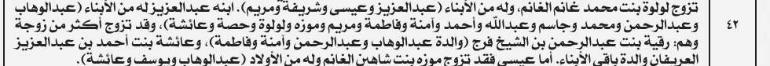

1863 to 1871
Abdulwahab and Lolwa Al-Ghanim
Abdulwahab bin Abdulaziz married Lolwa bint Mohammed Ghanim Al-Ghanim. Their children were Abdulaziz, Eissa, Sharifa and Mariam. Abdulwahab died in 1871, a year after Eissa was born, and Lolwa raised the children.
The Al Zayed chart shows Abdulwahab's father Abdulaziz and Lolwa's father Mohammed as brothers, both sons of Ghanim, so Abdulwahab married his first cousin. Eissa later did the same: his wife Moza was the daughter of his uncle Shaheen bin Mohammed Al-Ghanim, the brother of his mother Lolwa.
Lolwa saw to it that Eissa was taught to read, write and do sums. Her brothers then took him to sea: he first sailed with his uncle Thunayan Mohammed Al-Ghanim, and then spent three years on the ship of his uncle Nakhuda Ibrahim Mohammed Al-Ghanim, learning navigation, chart reading and how to fix a ship's position at sea. The Al-Ghanim side taught the first Al-Qatami nakhuda his trade.

Documents for this part
Sources
- Ma'alim Madinat Al-Kuwait Al-Qadima, part 7, page 79, footnote 42
- Yousef Mohammed Saqr Al-Jasser Al-Ghanim, Al Zayed: Tarikh wa Rijal (Al Zayed: History and Men), Kuwait, September 2006, pages 47 and 48
- Dr Yaqub Yusuf Al-Hajji, Nawakhdhat Al-Safar Al-Shira'i fi Al-Kuwait (The Captains of Kuwait's Sailing Voyages), 3rd edition, Center for Research and Kuwaiti Studies, 2004, pages 42 and 43